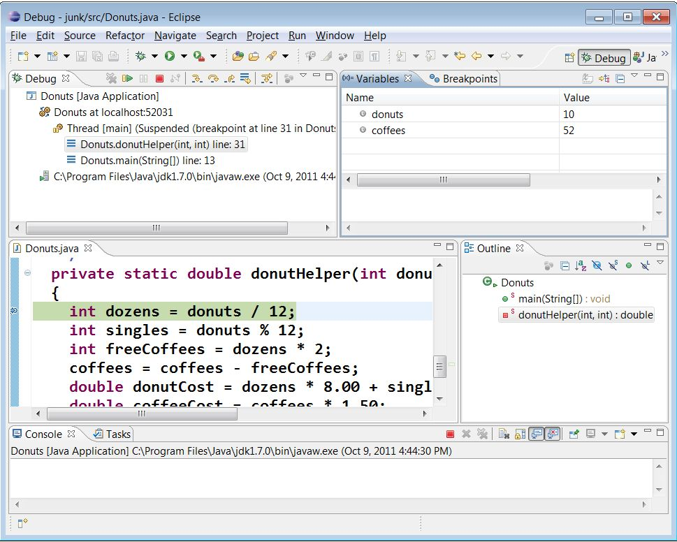

Breakpoints and single-stepping
Create a project in Eclipse with the file:
Donuts.java
First, run the program and see that the outputs are incorrect. The main method attempts to find the cost of 52 donuts and 10 coffees. 52 donuts is
four dozen plus four singles, which should be 35.00 (4 * 8.00 plus 4 * .75), and we should get 8 free coffees, so the two additional coffees are 3.00, for a grand total of 38.00.
Setting a breakpoint
- Find the first line of the helper method
donutHelper()and double-click in the left margin. You should see a small blue circle appear to the left of the line. - Now, start the program again, but start it in "Debug mode". That just means that when you right-click on the project, choose "Debug As... Java Application" instead of "Run As...". (Alternatively, instead of using the "Play" button from the toolbar to run it, use the button with the little beetle-like icon.)
- You can also run a JUnit test in debug mode, using "Debug As ... JUnit Test".
- A dialog comes up asking you whether you want to switch to "Debug perspective". Click Yes.
- You'll see an editor window with your code, along with some other unfamiliar panes.

- The pane at the top left, labeled "Debug" is the call stack. At the
top of the stack you can see
donutHelper, the method currently being executed, and just below that you seemain, the method that called it. - The pane at the top right has two tabs, labeled "Variables" and "Breakpoints".
The Variables tab lists all the local variables that are currently in scope. You see
two variables, namely the parameters
donutsandcoffees. There are other local variables defined later in this method, but at this point in the code, they haven't been defined yet.
- The pane at the top left, labeled "Debug" is the call stack. At the
top of the stack you can see
Single-stepping with Step Over
- At the top of the Debug pane you'll see some buttons with funny-looking arrows. If you hover your mouse over them, you'll see that they are called "Step Into", "Step Over", and "Step Return" and that they are also available using the F5, F6, and F7 keys, respectively.
- Press the Step Over button (or the F6 key) once. This causes the current line of code to be executed. Notice in the Variables pane, the variable
dozensis now defined. The green highlight in the editor pane is normally the line of code that is about to be executed. - Use Step Over or F6 to step through the next line. Notice that now
singlesis defined too. At this point you can identify the first error in the program. Look at the values of the two incoming parameters,donutsandcoffees. Weren't we trying to test this for 52 donuts and 10 coffees? We're calling it with the arguments mixed up. No wonder it's giving us incorrect values! - Continue to step through the remaining lines of the method. When it reaches the end, you'll be back in the main method. Notice that the method
donutHelperis no longer on the call stack. - Press the square red button to terminate the program. Let's fix the error we found: in the main method, switch the order of the arguments to
donutHelper. Note you can stay in the Debug perspective to edit your code and start it again. Remember to start it in Debug mode.
Managing breakpoints
- After fixing the code, let's set a breakpoint in
mainthis time. Double-click in the left margin by the first line ofmain. Now, let's also disable the breakpoint we set before. Click on the Breakpoints tab, next to Variables. You'll probably see two breakpoints listed. Un-check the breakpoint in donutHelper to disable it - the debugger remembers where the breakpoint is, but won't stop execution there.- Eclipse will list all the breakpoints you've set in all your projects, not just the one that's open. To clean things up, you can remove a breakpoint by right-clicking on it and choosing Remove.
- If you want to see the code where the breakpoint is set, just double-click on the listed breakpoint. (Use the back-arrow in the main toolbar to return.)
- After you've examined the breakpoints, click on the Variables tab again to make sure it's visible.
Step Into
- Now, run the program again in debug mode. It should stop on the first line of
main. Press Step Over or F6 now and see what happens. Notice it executes the current line of code completely, including the method call. - Step through the next line, which includes the call to System.out.println. You should see the correct output this time.
- For the next line, that is, the second call to
donutHelper, let us try something different. In this case, we want to step into the method call so we can see what it's doing. Use the Step Into button or F5. - Step through the first few lines. (When you see the
coffeesvariable updated to a negative value, you should have a clue about what's going wrong. Note that variables that have changed are highlighted in yellow.)
Step Return
- Now, suppose we are done examining a method and want to just return to the point where it was called. That's what Step Return is for. Click the Step Return button or F7 and you'll be back on the line containing the call to
donutHelper. - Press Step Over or F6 to finish executing the current line. The green highlight will be on the
printlnstatement. - Now we're going to do something odd that frequently happens by accident. Press Step Into again. Depending on exactly how your JDK is set up, you will either see a message saying "the source code is not available", or you might see the actual source code from some class in the Java libraries. Either way, we don't want to debug the Java libraries! Use your Step Return button to get back to your own code.
- Before you leave this page, fix the bug in the
donutHelpermethod, and make sure you get the right output.
Switching perspectives
For regular code editing, you probably don't want your workspace cluttered with the extra panes in the Debug perspective. You can easily switch between perspectives.- Under the main Window menu, go to Open Perspective and select "Java".
- When in Java perspective, you can use the same menu to switch to "Debug"
- There are usually some shortcut buttons on the upper right side of the toolbar as well.